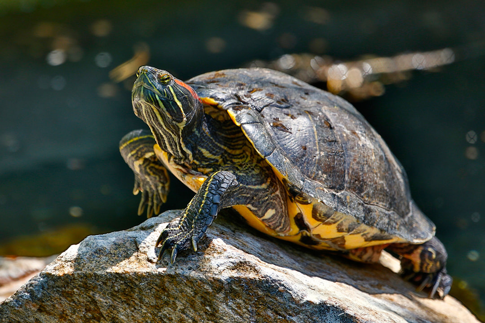
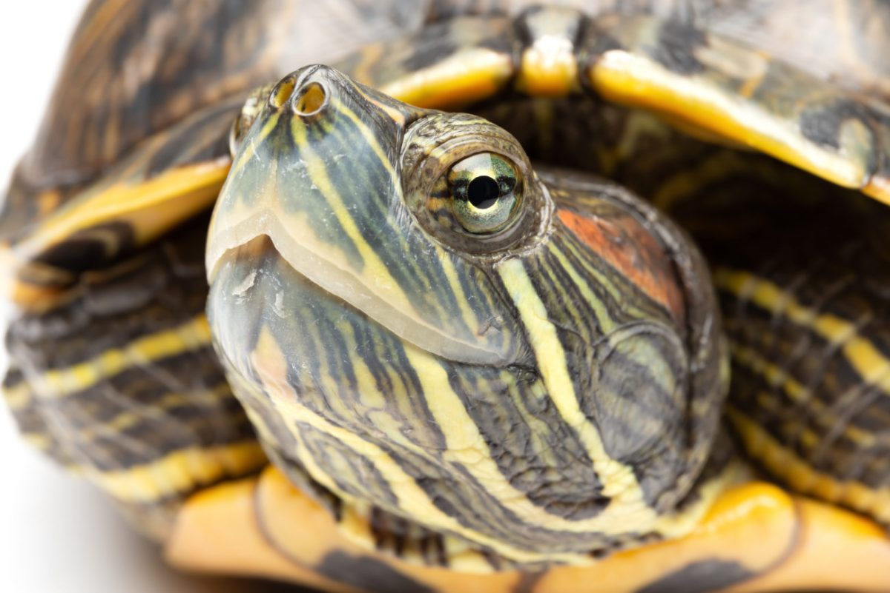
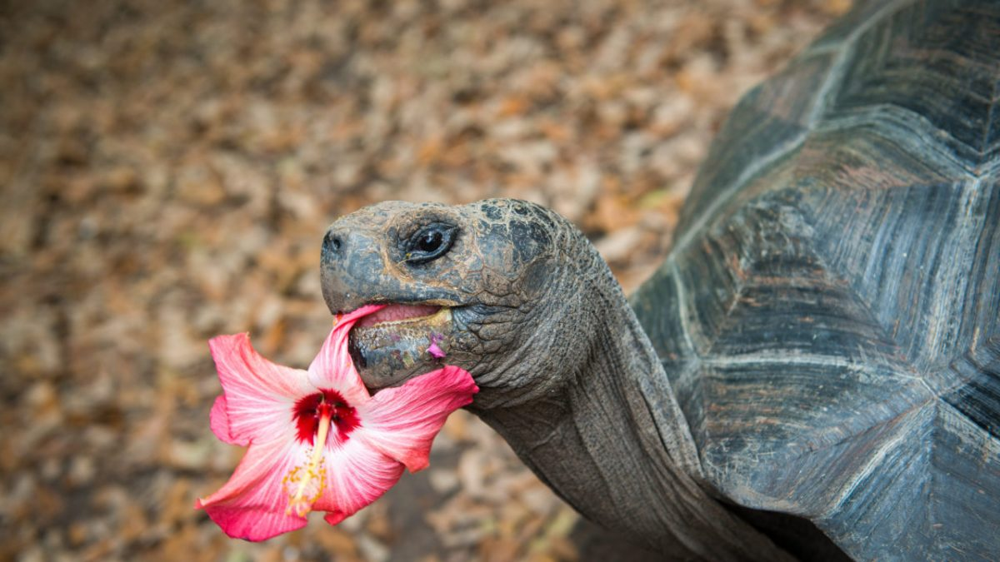
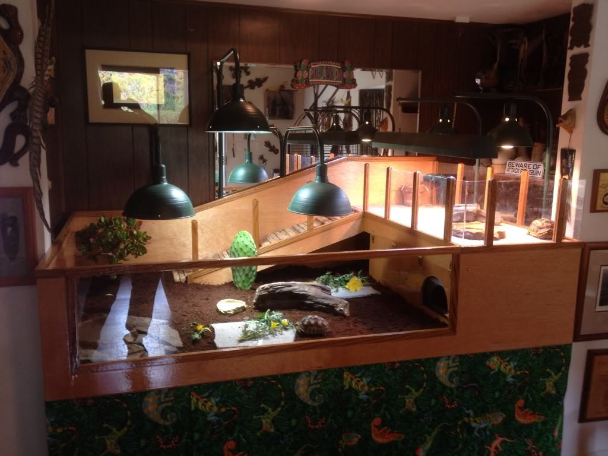
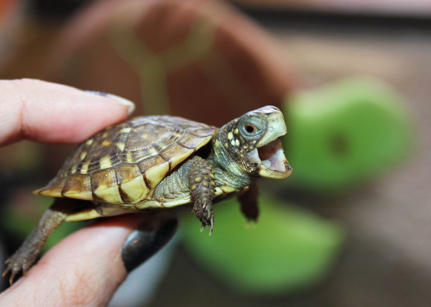
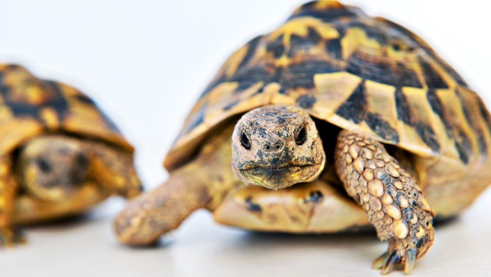
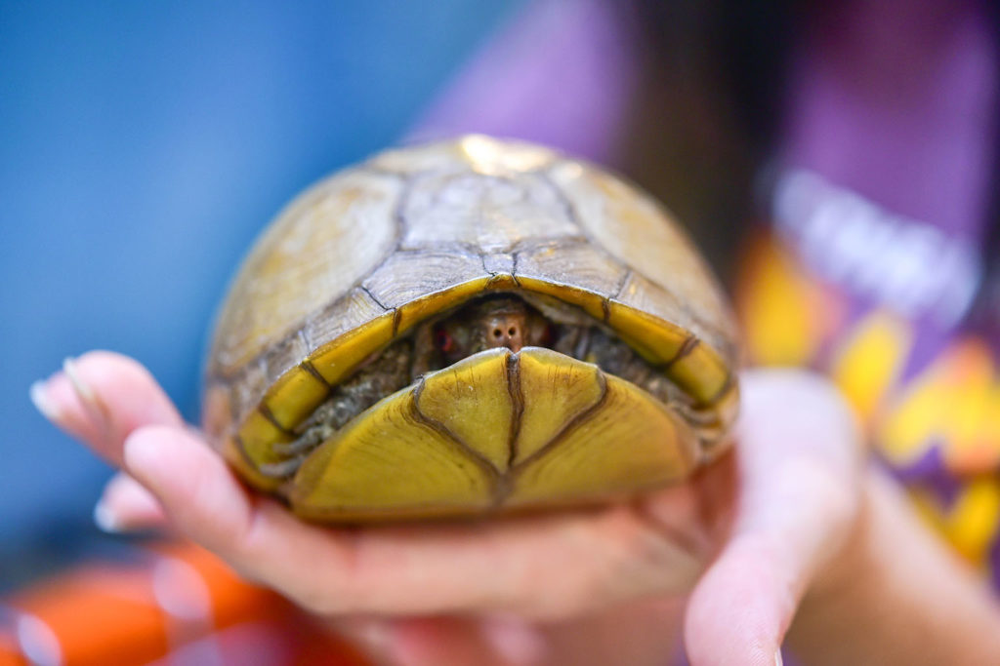
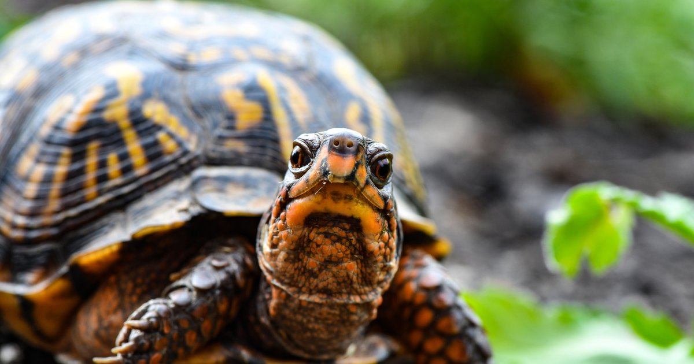

خاطرهای که توی ذهن خیلی از ماها از حیاط خونهی مامانبزرگا جا مونده، یه حوض آبی کوچولو، کلی گلدون و بوی نم باغچهی تازه آب داده شده هست. همیشه یه لاکپشت هم برای خودش توی تصویر داره میچرخه. اینطوریه که لاکپشتها توی قلب خیلی از ماها جا خشک کردن. لاکپشتها به عنوان حیوون خونگی ممکنه حیوونهای آروم و بی دردسر به نظر برسن. اما نگهداری از لاکپشت ها به خاطر عمر طولانیشون یه تعهد طولانی مدت محسوب میشه. بیایین بیشتر در مورد نگهداریشون صحبت کنیم و کلی مطلب تازه یاد بگیریم.

انواع لاکپشتها
لاکپشتها دو نوع خاکی و آبی دارن. لاکپشت آبی باز به دو دسته تقسیم میشن؛ بعضی از اونا تمام عمرشون رو توی آبهایی مثل اقیانوسها میگذرونن و بعضی دیگه به محیطهایی مثل رودخونه احتیاج دارن تا هم توی آب باشن و گاهی هم از آب بیرون بیان و حموم آفتاب بگیرن.
ویژگیهای لاکپشتهای آبی
- بیشتر وقتا توی آب زندگی میکنن.
- بین انگشتهاشون پرده دارن.( مثل پای اردک)
- چنگالهای بلندی دارن.
- ۲۰ تا ۴۰ سال عمر میکنن.
- همهچیزخوار هستن. ینی هم گیاه میخورن و هم گوشت.
- لاکشون مناسب شنا کردنه.

ویژگیهای لاکپشتهای خاکی
- توی خشکی زندگی میکنن.
- پاهاشون پهن و درشته
- ۸۰ تا ۱۵۰ سال عمر میکنن.
- علاوه بر گیاه، حشره، حلزون و کرم هم میخورن. بعضی از انواع اونا گوشتخوار هم هستن.
- لاکشون حالت گنبدی شکل داره.

لاکپشتهای آبی و خاکی هر دو یه لاک دارن که ازشون در مقابل خطرات مراقبت میکنه. جالبه بدونین که لاکشون جزئی از بدنشونه! به این معنی که اونا نمیتونن مثل حلزونها از لاکشون بیرون بیان و هوایی عوض کنن. برعکس اگه لاکشون آسیبی ببینه درد زیادی میکشن و حتی ممکنه باعث مرگشون بشه.
لاکپشت خاکی برای نگهداری توی خونه بهتره یا لاکپشت آبی؟
موقع تصمیمگیری باید به این فکر کنین که شما برای کدوم نوع شرایط زندگی بهتری رو میتونین به وجود بیارین. لاکپشتها خلاف تصوری که ما داریم به کلی فضا احتیاج دارن.

فضای مورد نیاز برای نگهداری از لاکپشت خاکی
لاکپشتهای خاکی به کلی فضا برای گشتوگذار احتیاج دارن. محیطی که براشون در نظر میگیرین باید بیرون از خونه باشه، هم آفتابگیر باشه و هم فضاهایی سایهدار داشته باشه. لاکپشتتون باید توش احساس امنیت کنه.
رطوبت فضایی که توش زندگی میکنه توی سلامتیش اهمیت زیادی داره. برای اینکار لازمه یه لایه کود گیاهی بدون بو توی محل زندگیش بریزین.
لاکپشتهای خشکیزی به آب برای شنا کردن احتیاج ندارن اما لازمه که هرچندوقت یکبار توی آب ولرم گذاشته بشن تا آب بدنشون تامین بشه. یادتون باشه یه ظرف کم عمق برای آب خوردن توی محل زندگیشون بذارین.

فضای مورد نیاز برای نگهداری از لاکپشت آبی
یه لاکپشت آبی بالغ به یه آکواریم با حجمی حدود۴۰۰ لیتر آب احتیاج داره که عمق آب حدود دو برابر طول لاک و طول فضای آبی حدود ۴_۶ برابر طول لاک لاکپشت باشه. علاوه بر این به فضایی هم برای آفتاب گرفتن و خشک شدن هم احتیاج داره. یادتون باشه آکواریومتون به یه فیلتر اساسی و تعویض مرتب آب هم احتیاج داره. چون لاکپشتهای آبی مستعد قارچ و مشکلات پوستی هستن.

اگه دوس دارین تصور بهتری از ۴۰۰ لیتر داشته باشین، آکواریومی رو در نظر بگیرین با طول ۱ متر، عرض۵۰ و ارتفاع ۸۰ سانتیمتر البته این اعداد فرضی هستن و شما با هر نسبت دیگهای هم میتونین آکوارومتون رو بسازین
با توجه به این مسائل نگهداری از کدوم نوع لاکپشت براتون امکان پذیره؟؟ خب اگه تصمیمتون رو گرفتین بیایید ببینم دیگه چه مواردی رو باید رعایت کنیم اما اول میخوایم یه نکتهی خیلی خیلی مهم رو بهتون بگیم:
هیچ وقت یه لاکپشت رو از طبیعت به خونه نیارین.

چرا نباید لاکپشتهای وحشی رو به خونه بیاریم؟
بعضی از گونههای لاکپشتها در خطر انقراضن. با جدا کردن اونا از محیط اصلی زندگیشون اونا رو در معرض خطر قرار میدین و چرخه تولیدمثل اونا رو قطع میکنین. علاوه بر این، اونا ممکن ناقل بیماریهایی باشن که به انسان هم منتقل میشن. کمی جلوتر در موردشون مفصلتر صحبت میکنیم. حیواناتی که از محیط طبیعی به خونه آورده میشن با زندانی شدنشون به خوبی کنار نمیان و معمولا از استرس میمیرن.
انتخاب لاکپشتی که به خونه میآرین
خب حالا که یاد گرفتیم که هرکدوم چه شرایطی برای زندگی لازم دارن بیایین ببینیم که برای نگهداری از لاکپشت توی خونه کدوم گونهها مناسبترن.
معمولترین گونههای لاکپشتی که برای نگهداری میتونین انتخاب کنین، لاکپشت جعبهای ( لاکپشت خشکیزی هست) و لاکپشت گوش قرمز و لاکپشت برکهای خزری ( لاکپشتهای آبی) هستن.
زمانی که میخواین به سرپرستی قبولشون کنین، به سلامت لاک، رنگ و حالت چشمشون واینکه فعال هستن یا یه گوشه افتادن خیلی دقت کنین.

لاکپشت جعبهای
لاکپشتهای جعبهای، لاک پررنگی دارن که روش طرحهای زردرنگ داره. بزرگترین لاکپشتهای جعبه حدود ۱۵ سانتیمتر هستن.
لاکپشت گوش قرمز
لاکپشتهای گوش قرمز، توی آکواریم یا برکههای دستساز نگهداری میشن. بچههاشون حدود ۱۰ سانتیمتر و وقتی بالغ بشن حدود ۳۰ سانتیمتر میشن. برای راحتی لاکپشتتون ممکنه لازم باشه با بزرگ شدنش آکواریوم رو هم بزرگتر کنین.

لاکپشت برکهای خزری
نگهداری از لاکپشت های کنار برکهای خزری هم توی آکواریم یا برکههای دستساز انجام میشه. این گونه متاسفانه به خاطر تاثیر منفی زیادی که انسان توی محیط زندگیش گذاشته به شدت کم شده و در معرض خطر انقراضه. توی کشورهایی مثل ایران، عربستان، ترکیه، قبرس، بلغارستان و … پیدا میشه. اندازهی لاکپشت خزری بالغ بین ۱۷ تا ۲۵ سانتیمتره.

نگهداری از لاکپشت ها
همونطوری که گفتیم چندین گونه لاکپشت وجود داره که با توجه گونهاشون نیازهاشون متفاوته. اگه نمیدونین لاکپشتتون از چه گونهای هست از دامپزشک راهنمایی بخواین.
نگهداری از لاکپشت جعبهای
نگهداری از لاکپشت های جعبهای به بچهها و افراد تازهکار پیشنهاد نمیشه. این موجودات دوست داشتنی نسبت به استرس حساسن پس باید براشون فضایی ایجاد کنین که شبیه محیط طبیعی زندگی اوناس. به صورت هفتگی محیط زندگیشون رو تمیز کنین و هر روز یا یک روز در میون بهشون غذا بدین.

خونهی لاکپشت جعبهای
علاوه بر مواردی که توی بخش فضای مورد نیاز برای نگهداری از لاکپشت خاکی گفتیم، لازمه موارد زیر رو هم در نظر بگیرین.
- لونهاشون باید توی فضای باز باشه.
- دماش به کمتر از ۱۰ درجه سانتیگراد نرسه.
- لبههاش ۵۰ سانت بلند باشه و به سمت داخل برگشته باشه، تا نتونه ازش خارج بشه.
اگه به خاطر شرایط اقلیمی محل زندگیتون نمیتونین تمام سال لاکپشت رو بیرون از خونه نگه دارین، سعی کنین توی چند ماهی که هوا مناسبتره این امکان رو بهش بدین که بیرون از خونه باشه. برای زمانی که توی خونه هستن یه ترآریوم به حجم ۱۷۰ لیتر درست کنین. بعضی افراد توی استخرهای بادی بچهها تغییراتی ایجاد میکنن و اونا رو فضای مناسبی برای نگهداری از لاکپشت میکنن.
در مورد آکواریوم لاکپشت و اینکه یک آکواریوم مناسب باید چه ویژگیهایی داشته باشه در مقاله آکواریوم لاک پشت صحبت کردیم؛ پیشنهاد میکنم مطالعهاش کنین.

نگهداری از لاکپشت های گوش قرمز
لاکپشتهای گوش قرمز فراوانتر از لاکپشتهای جعبهای هستن و اونا رو بیشتر توی پتشاپها یا آکواریومها میبنین. دائقهی اونا توی کوچیکی بیشتر به سمت خوردن حلزون، ماهیهای کوچیک، حشرات و … هست و گوشتخوار محسوب میشن اما با بزرگ شدنشون بیشتر به سمت گیاهخواری می رن. سعی کنید بیشتر تو آب به لاکپشت های گوش قرمز غذا بدین.

نگهداری از لاکپشت کنار برکهای خزری
نگهداری از این گونه لاکپشت خیلی شیرینه چون اونا شما رو به عنوان صاحبشون تشخیص میدن و ممکنه حتی به نوعی ازتون درخواست غذا هم بکنن. اما دوست ندارن که زیاد بهشون دست بزنین و بلندشون کنین. حتی ممکنه گازتون هم بگیرن. اگه بهشون استرس وارد بشه ترجیح میدن توی آب باقی بمونن و بیخیال حموم آفتابشون میشن.
احساس امنیت در لاکپشت
هر سه نوع لاکپشت برای احساس امنیتشون به جایی برای پنهان شدن نیاز دارن. وجود گیاهان، جعبههایی که بشه داخلش پنهان بشن، تکههای چوب غوطهور توی آب ( برای گوش قرمزها) میتونه کمک کنه که در برابر مهاجمین از خودشون مراقبت کنن و استرس کمتری رو متحمل بشن. این اشیا رو طوری بچینین که خودشون باعث گیر افتادن لاکپشتتون نشن.

دمای محیط زندگی لاکپشتها
لاکپشتها خونسرد هستن و نمیتونن مستقل از محیط گرم بشن. برای اینکه شرایط محیطی مناسب رو براشون آماده کنین خیلی خیلی به دمای محل زندگیشون اهمیت بدین.
دمای محیط زندگی لاکپشتهای آبی
برای لاکپشتهای آبی دمای آب باید در حدود ۲۲ الی ۳۰ درجه سانتیگراد باشه. اگه میخواین خوشحالترین لاکپشت آبی جهان رو داشته باشین، نقطههایی از محل زندگیش رو با لامپهای مخصوص گرمتر کنین. دمای این نقاط میتونه طیفی بین ۳۴ تا ۳۸ درجه سانتیگراد داشته باشه.
دمای محیط زندگی لاکپشتهای خشکیزی
برای لاکپشتهای خاکی دمای مناسب در روز بین۲۹ تا ۳۵ درجه سانتی گراده و در شب میتونه بین ۱۸ تا ۲۳ درجه سانتیگراد باشه. لاکپشتهای خاکی هم دوست دارن جاهایی از فضای زندگیشون گرمتر باشه.

خرید یه دماسنج برای داشتن تمام این اطلاعات دمایی از واجبات شد نه؟
نور محیط زندگی لاکپشتها
لاکپشتها برای اینکه بتونن کلسیم رو متابولیزه کنن به ۱۲ ساعت نور خورشید احتیاج دارن. در غیر این صورت مریض میشن و ممکنه حتی بمیرن. اگه لاکپشتتون رو توی خونه نگه میدارین از لامپهای UVB استفاده کنین. یادتون باشه حتما شب چراغ رو خاموش کنین تا چرخه طبیعی شبانه روز رو تقلید کرده باشین.
با خاموش شدن چراغها چطوری دمای محیط زندگی لاکپشتم رو گرم نگه دارم؟
میتونین از تشکهای حرارتی مخصوص یا سرامیکهای حرارتی استفاده کنین.
تغذیه لاکپشتها
از اونجایی که لاکپشتها همه چیزخوار هستن نگه داشتن اونا توی فضای طبیعی کمک میکنه که هرچیزی که لازم دارن رو از محیط بگیرن. علاوه براین انواعی از غذاهای لاکپشت وجود داره که میتونین براشون تهیه کنین و به همراه سبزیجات تازه بهشون بدین. آب تازه رو فراموش نکین. لاکپشتهای کوچیکتر روزانه و لاکپشتهای بالغ یک روز در میون به غذا احتیاج دارن.
در مورد میزان غذایی که باید به لاکپشتتون بدین با دامپزشک مشورت کنین.

مکملهای غذایی مورد نیاز لاکپشتها
لاکپشتهایی که بیرون از خونه نگهداری میشن کمتر به مکملهای غذایی احتیاج دارن. تغذیه طبیعی و نور خورشید تمام نیازهاشون رو رفع میکنه. اما اگه لاکپشتتون داخل خونس و نمیتونین براش لامپ UVB تهیه کنین، باید بهش مکمل D3 بدین.
ویتامین A هم برای سلامت پوست و چشم لاکپشتتون لازمه. کمبود ویتامین A باعث پف کردن یا بسته شدن چشم لاکپشتتون میشه.
چرا لاکپشتها به خواب زمستونی میرن؟
همونطوری که گفتیم لاکپشت یه حیوون خونسرده. وقتی دمای هوا کمی خنک و طول روز کوتاهتر میشه، لاکپشتها کم غذا میشن و خودشون رو برای خواب زمستونی آماده میکنن. اونا برای خودشون چالهای توی زمین میکنن تا بدنشون یخ نزنه. گاهی که بارون میآد ممکنه بیرون بیان کمی آب بخورن و دوباره به چالشون برگردن. توی مناطقی که تابستونهای سختی داره و زمستونهاش گرمتره، لاکپشت تابستون به خواب میره تا از گرمای هوا جون سالم به در ببره.

لاکپشتهای خونگی هم به خواب زمستونی احتیاج دارن؟
بله. خواب زمستونی برای سلامت لاکپشت لازمه. حتی اگه دمای خونتون طوری نیست که خیلی سرد بشه باید شرایطی رو برای خواب زمستونی لاکپشتتون درست کنین. لاکپشتها قبل از خواب زمستونی وزن اضافه میکنن و در طول دورهی خوابشون از چربیهای اضافه میسوزونن. پس به زور بهشون غذا ندین و اجازه بدین پروسهی طبیعی خودش رو طی کنه.
حدود ۲ الی ۶ هفته قبل از خواب زمستونی، اونا از دست غذا خوردن میکشن. شما باید با غوطه ور کردنشون توی یه ظرف کم عمق آب، کمک کنین که آب بدنشون تامین بشه.
خطرات نگهداری از لاکپشت ها
لاکپشتها میتونن باکتری سالمونلا رو به شما منتقل کنن. این باکتری باعث میشه چند روزی تب کنین و اسهال داشته باشین. اما اگه سیستم ایمنی بدنتون ضعیف باشه ممکنه کارتون به بیمارستان هم بکشه. همینطور احتمال وجود کرمهای حلقهای که یه جور انگل مشترک بین انسان و حیوانات هستن هم وجود داره.

چطور در برابر سالمونلا از خودمون مراقبت کنیم؟
در صورتی که لاکپشتتون باکتری رو داشته باشه با لمس کردنش، مریض نمیشین. سالمونلا باید وارد دهانتون بشه تا بتونه آلودهاتون کنه. به همین خاطر شستشوی مرتب دست بعد از لمس کردنش خیلی اهمیت داره. بچههای کوچیک که حواسشون به شستشوی مرتب دستشون نیست، بیشتر در معرض این بیماری هستن.
میتونم لاکپشتم رو توی طبیعت آزاد کنم؟
اگه به هر دلیلی نمیتونین از لاکپشتتون نگهداری کنین، اونو توی طبیعت رها نکنین!
با آزاد کردنش بهش لطف نمیکنین. حیوونهایی که از بچگی توی طبیعت زندگی میکنن، یاد میگیرن غذای خودشون رو تامین کنن. اما لاکپشتهای خونگی ممکنه از گرسنگی تلف بشن. علاوه بر این بعضی از انواع لاکپشت به شدت مهاجم هستن. به این معنی که اکوسیستم محیطی که توش رها شدن رو تغییر میدن. لاکپشت گوش قرمز یکی از همین گونههای مهاجمه! پس به هیچ وجه کنار رودخونه رهاش نکنین.

متاسفانه خیلی از افرادی که حیوونها رو برای تولیدمثل و فروش پرورش میدن به سلامتی و محیط زندگی این کوچولوهای معصوم اهمیتی نمیدن. شرایط سخت عمر این حیوونها رو کوتاه میکنه. سعی کنین تا جایی که امکانش هست به دنبال به سرپرستی گرفتن لاکپشتتون از طریق واگذاری باشین. حیوونها کالا نیستن که اونا رو خریداری کنیم.
خب! این مطلبمون چه نکتهای داشت که از قبل نمیدونستین؟ شما تجربهای توی نگهداری از لاکپشت ها داشتین؟ هر سوالی دارین توی قسمت نظرات بپرسین تا راهنماییتون کنیم.
سلام جدیدا تصمیم نگهداری لاکپشت رو دارم برا همین اومدم بپرسم چون من نمیتونم اکواریوم داشته باشم میشه داخل یک لگن بزرگ نگهداری بکنم لگنمون خیلی بزرگه بعد اینکه چی باید بهش بدم بخوره(از رود خانه یا سد میخوام بگیرم از دزفول) جواب بدین ممنون میشم آها منظورم از لگن این نیست ک ولش کنم داخل لگن لگنرو براش درست میکنم سنگی گیاهی …..داخل لگن براش فراهم میکنم میشه؟
سلام دنیا جان
لگن انتخابخوبی برای نگهداری از لاکپشت نیست. باید شرایط شنا و خشکی مناسبی براش فراهم بشه و از طرفی نیازش به نور UV تامین بشه. درمورد غذاش توی این مقاله برات توضیح دادیم
و اینکه توصیه میکنم از رودخونه لاکپشت نگیر چون هم باعث آسیب به زیست بوم میشی و هم ممکنه بیماری داشته باشه.
لاکپشت من بر عکس مونده بود تو آب بعد دست و پاهاش رو تکون نمیده یه چشمش بازه اونیکی بسته کلا بدنش لمسه باید چیکار کنم ؟؟؟؟
نمرده؟
سلام این مقاله خیلی خوب بود دستتون دردنکنه 😍✌☺☺✌
سلام مجدد
چجوری میشه از سلامتی لاک پشت آبزی مطمئن شد ؟
سلام معین جان
بهتره به یک دامپزشک اگزوتیک مراجعه کنی یا از طریق کلینیک آنلاین با ما در ارتباط باشی
میخواهم یک لاک پشت بخرم از نظر شما چه نژادی بخرم بهترِ
سلام محمد حسین عزیز
مهمترین مسئله اینه که شما توانایی فراهم کردن چه شرایطی رو دارید؟ چون هر نژادی با ویژگی های خاصی سازگاره.
سلام
ممنون بابت مطالب مفید تون .
لاک پشت کوچیک من غذا نمیخوره .
البته فروشنده لاک پشت گفتش که تا دو ماه نباید غذا بخوره . راستش شک دارم که این حرف درسته
سلام زهرا جان
هر موجود زنده ای نیاز به غذا داره
حتما باید نژاد لاکپشتت رو بدونی که متوجه بشی گوشت خواره یا گیاه خوار و حتما باید براش از لامپ یو وی استفاده کنی
من هم موافق این بی رحمی هستم که برای فروش و تولید مثل پرورش میدن.من خودم یدونه لاکپشت حدودا ۳۰ ساله دارم خیلی سنگینه من به شما توصیه میکنم اگر حیوان خانگی می خواهید لاکپشت بهترین گزینه است.
سلام . برای تشخیص گونه و .. . لاکپشتی که پیدا کردم عکسش رو کحا بفرستم؟!
سلام عاطفه جان،
میتونین از طریق مشاوره آنلاین، تلگرام یا واتساپ دراختیارمون بذارین:
با مشاوره دامپزشکی آنلاین کنار شما هستیم (سوال مستقیم و تخصصی از دامپزشکان پت پرس)
تلگرام: ۰۹۹۸۱۱۹۸۰۸۷
واتساپ: ۰۹۰۳۱۷۴۶۹۳۹
سلام یکی از اطرافیان یک لاک پشت کوچک رو از شمال آوردن تهران بعد میخواستن بندازنش کنار جوب که من آوردمش خونه
حالا نمیدونم کجا باید آزادسازیش کنم؟
یا چیکارش کنم
راه حلی دارید؟؟
سلام مصطفی عزیز،
عکسش رو برامون ارسال کنین تا براساس اینکه گونه اهلی هست یا وحشی بتونیم راهنماییتون کنیم که چه نوع رهاسازی براش مناسب تره:
با مشاوره دامپزشکی آنلاین کنار شما هستیم (سوال مستقیم و تخصصی از دامپزشکان پت پرس)
سلام. میشه لطفا یه جایی یا یه سایتی رو که لاکپشت میفروشن معرفی کنید؟ مرسی از توجهتون🌸
سلام مهسا جان،
متاسفانه اطلاعی ندارم.
تو شیپور
تو دیوار نیستش
اگه خواستی میتونم بیشتر هم راهنمایی کنم
پت شاپ کاپیتان تو مپ سرچ کن